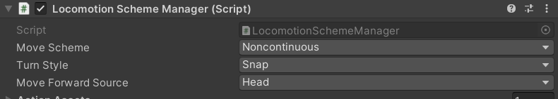

Locomotion
The default rig supports locomotion by teleportation or continuous movement. By default, the rig is set to work with teleportation only, you can change this settings on the Locomotion Scheme Manager component on the XR Rig child object.

Continuous Movement
Continuous movement is controlled by default with the thumbsticks. Left to move around, right to turn on the spot. In general, we don't recommend this locomotion solution as it can cause motion sickness in inexperienced users, however it can still be useful for specific use cases, precision adjustments or testing.
Teleportation
Teleportation requires the user to hold the trigger, then release while pointing at a teleportable surface or anchor. Teleportation requires a little more setup to work properly, but most of it is handled automatically by VR Builder.
It is recommended for teleportation to work on different layer than normal interactions. By default, VR Builder uses the XR Teleport raycast layer for raycasts from the teleportation controllers, and the XR Teleport XRI interaction layer for teleportation interaction.
This means that interactors and interactables need to be configured with these layers in order to work. When a new scene is created, the teleport interactors on the default rig are automatically configured to raycast and interact on these layers.
Likewise, when creating a teleportation anchor or area, you should use the Teleportation Anchor (VR Builder) or Teleportation Area (VR Builder) components instead of the XRI versions. These include a button in the inspector which automatically configures them to settings compatible with the VR Builder rig, including layer settings.
The teleportation anchor in particular also include two more options: you can create a default anchor complete with graphics and collider, and you can enable proximity detection (see Teleport condition).
Given this, teleportation should be easy to setup and just work out of the box. In case something does not, for example when editing an old scene or after changing the position of the XR Teleport layer, it is possible to reset the layers on the rig and all anchors and areas in the scene. To do so, select Tools > VR Builder > Developer > Configure Teleportation Layers. Note that this will overwrite your existing layer masks and select the XR Teleport layer on all of them.